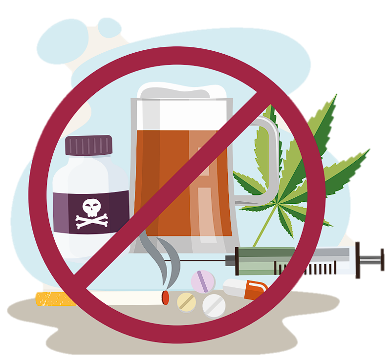
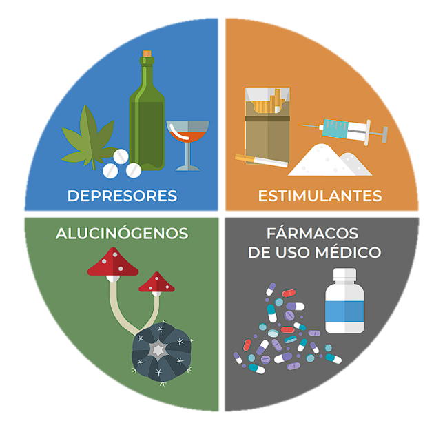
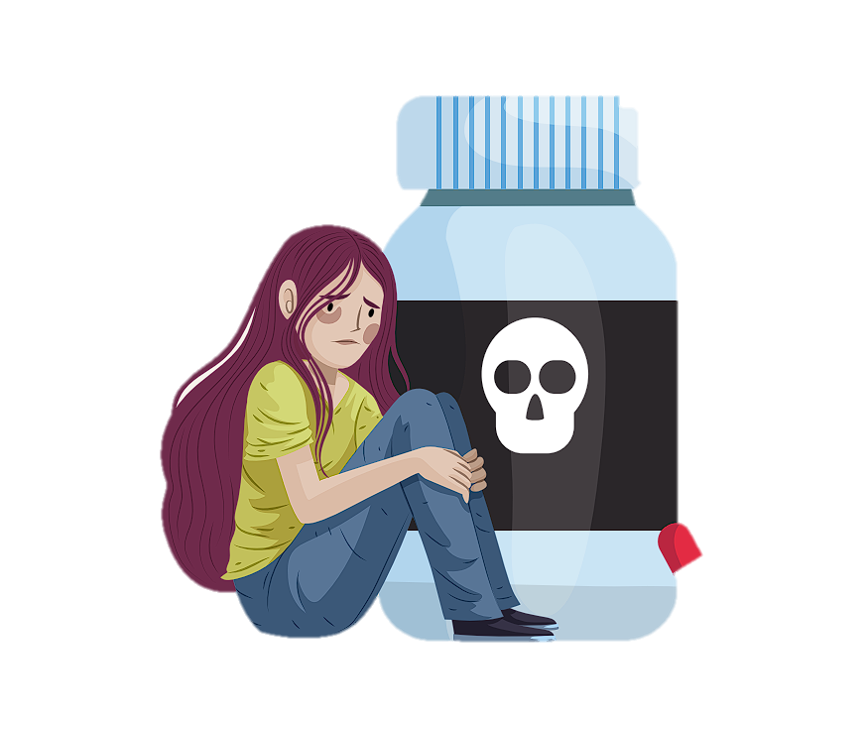

PROPÓSITO
Presentar el concepto de droga osustancia psicoactiva, así como su
clasificación con base en los efectos ocasionados en el cuerpo.

¿QUE ES?
La Organización Mundial de la Salud (OMS) define el término droga o sustancia psicoactiva como
aquel compuesto de origen natural, semisintético o sintético
que produce alguna modificación en una o más funciones en el
organismo, sea cual sea la vía de
administración.

CLASIFICACIÓN
Actualmente se clasifican por susefectos en cuatro grandes familias:
• depresores
• estimulantes
• alucinógenos
• fármacos de uso médico
DEPRESORES
Suprimen, inhiben o reducen algunos aspectos de la actividad del
Sistema Nervioso Central (SNC).
• Síntomas de intoxicación: confusión, habla distorsionada, mareos, sequedad en la boca, problemas motrices y de memoria.
La respiración se vuelve lenta ose detiene por completo.
• Las principales sustancias depresoras del SNC son medicamentos sedantes y opiáceos.
• Algunos ejemplos son el alcohol, la cannabis, los analgésicos,las benzodiacepinas, los opiáceos y sus análogos sintéticos
como el fentanilo
ESTIMULANTES
Activan, potencian o incrementanla actividad del SNC.
• Síntomas de intoxicación: aumento de la frecuencia cardiaca,
la temperatura corporal y la presión arterial. Generan una sensación de energía, un estado de
alerta y de locuacidad.
Ademásde una sudoración excesiva, escalofríos, náuseas y vómito.
• Algunos ejemplos son la cafeína,la nicotina, la cocaína y la metanfetamina.
LAS DROGAS TRUNCAN TU PROYECTO DE VIDA Y TE PUEDEN MATAR
Ten presente que:
• Las drogas o sustancias psicoactivas producen modificaciones en una o más funciones del organismo.
• Las drogas se clasifican en cuatro tipos: depresoras, estimulantes, alucinógenas y fármacos de uso médico.
• Todas afectan de alguna manera el Sistema Nervioso Central.

Alucinógenos
Inducen alteraciones de la percepción y del pensamiento.
Producen alteraciones leves en la memoria y la orientación.
• Síntomas de intoxicación: euforia o cambios variados del estado de ánimo, ilusiones visuales y
alteración de la percepción. Dilatación de las pupilas, elevación
de la presión arterial, taquicardia, temblor y reflejos exaltados.
• Algunos ejemplos son dietilamida del ácido lisérgico (LSD),
la psilocibina, la mescalina y el peyote.